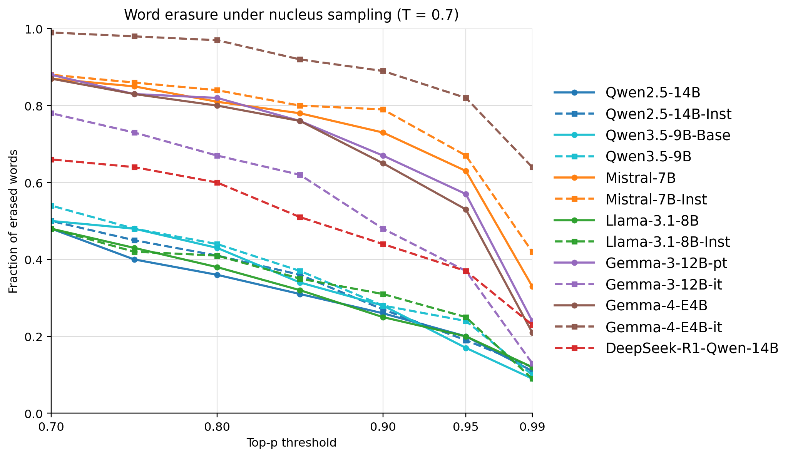
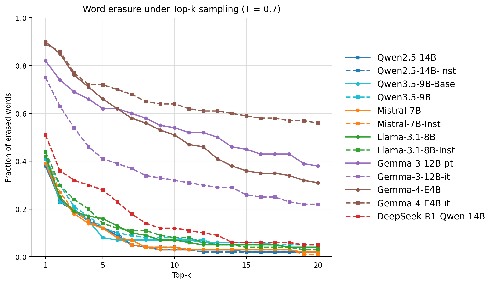
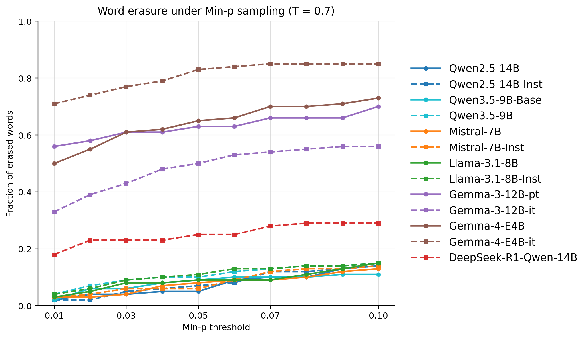
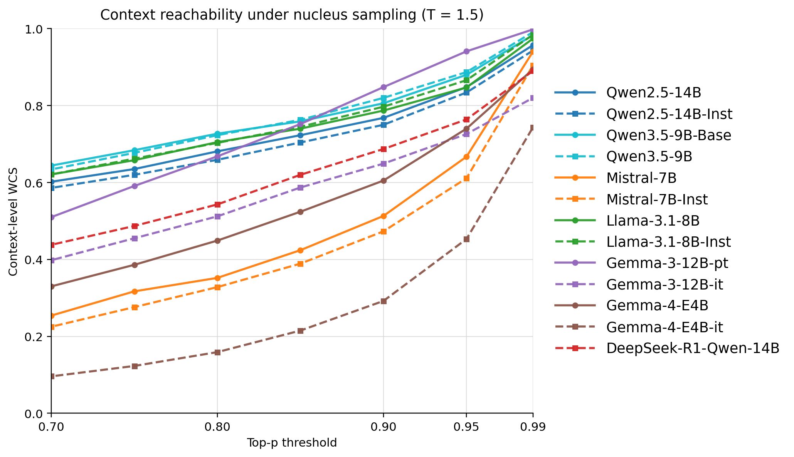

The paper introduces the Word Coverage Score (WCS) to quantify how standard decoding filters mathematically prune contextually appropriate low-frequency words, revealing that sampling defaults act as unintended censorship mechanisms that homogenize LLM output.
本文提出词覆盖率评分（WCS），量化标准解码过滤器如何系统地剪除低频但信息丰富的词汇，揭示默认采样参数会无意中审查并同质化大语言模型的输出。该指标为优化文本连贯性与词汇丰富度之间的权衡提供了诊断框架。
Deep Note — word-coverage-score
Key Takeaways - Standard sampling filters (Top-p, Top-k, Min-p) systematically prune low-frequency, high-information words even when they are contextually appropriate and within the model's probability space. - The Word Coverage Score (WCS) quantifies lexical reachability by measuring whether each token of a target word survives a given sampling filter during autoregressive generation. - Industry-default sampling parameters act as unintended censorship mechanisms, homogenizing LLM output by suppressing the long-tail of human vocabulary. - The WCS provides a diagnostic framework to optimize the trade-off between text coherence and lexical richness.
0) Metadata
- Title: Lost in Sampling: Assessing Lexical Reachability in LLMs via the Word Coverage Score (WCS)
- Alias: word-coverage-score
- Authors: Samer Awad, Javier Conde, Carlos Arriaga, Tairan Fu, Javier Coronado-Blázquez, Pedro Reviriego
- arXiv ID: 2605.27268
- Published:
- Links:
- Abs: https://arxiv.org/abs/2605.27268
- HTML: https://arxiv.org/html/2605.27268v1
- PDF: https://arxiv.org/pdf/2605.27268
- Tags: lexical-diversity, sampling-filters, llm-homogenization, word-coverage-score, decoding-mechanics
- Domains: system_safety
- Rating: 3/5 (base 1 + quality 1 + observation 1)
1) Why-read
The paper introduces the Word Coverage Score (WCS) to quantify how standard decoding filters mathematically prune contextually appropriate low-frequency words, revealing that sampling defaults act as unintended censorship mechanisms that homogenize LLM output.
2) CRGP
C — Context
LLMs are known to produce repetitive and homogeneous text despite large latent vocabularies. Prior work has attributed this to training data, alignment, or model knowledge, but the role of decoding mechanics in suppressing linguistic diversity has been underexplored.
R — Related work
- Studies on LLM output homogeneity and mode collapse (e.g., structural collapse of probability distributions).
- Analysis of lexical diversity in conversational models and sensitivity to parameters like presence penalties and temperature.
- Observation that LLM outputs follow a two-parameter Mandelbrot distribution with an artificially steep Zipfian tail, indicating suppressed rare token selection.
- Research on sampling filters (Top-k, Top-p, Min-p) and their role in balancing coherence and diversity.
G — Gap
Existing research focuses on model knowledge and training data as causes of lexical homogeneity, but neglects the impact of decoding mechanics. There is no metric that directly measures how sampling filters prune contextually appropriate human vocabulary during generation.
P — Proposal
The paper proposes the Word Coverage Score (WCS), a metric that quantifies lexical reachability by performing a Forced-Path Audit: for a target word in a human-authored passage, it checks whether each constituent token survives a given sampling filter. The WCS aggregates these binary survival outcomes across words to measure the lexical survival rate as a function of sampling parameters.
---
4) Experiments
Main results
The paper audits open-weight models on human-authored corpus fragments, evaluating absolute word erasure and aggregated lexical decay curves for Top-p, Top-k, and Min-p samplers. Results show that industry-default sampling parameters systematically censor low-frequency, high-information words, with the WCS dropping significantly as filters become more restrictive.
Ablation
The paper does not include a dedicated ablation study, but the WCS framework itself is evaluated across multiple sampling parameters and model variants (baseline vs. aligned), showing consistent suppression of rare words.
Limitations
['The WCS is evaluated only on open-weight models and may not generalize to proprietary models with different architectures or alignment techniques.', 'The metric focuses on single-word reachability and does not capture longer-range lexical diversity or syntactic variation.', 'The forced-path audit assumes ground-truth context, which may not reflect real generation dynamics where context is also sampled.']
5) Why it matters
- Provides a rigorous, quantitative tool to diagnose and mitigate lexical homogenization in LLMs, directly relevant to improving output diversity.
- Highlights that decoding mechanics, not just training data or alignment, are a key bottleneck for preserving human-like lexical richness.
- Offers actionable insights for tuning sampling parameters to balance coherence and diversity, which is critical for applications like creative writing, translation, and dialogue systems.
6) Next steps
- [ ] Apply the WCS to evaluate and compare proprietary models (e.g., GPT-4, Claude) to see if the censorship effect generalizes.
- [ ] Develop adaptive sampling strategies that dynamically adjust filters based on WCS to preserve rare words without sacrificing coherence.
- [ ] Extend the WCS to multi-word phrases and syntactic structures to capture broader linguistic diversity.
- [ ] Integrate the WCS as a diagnostic tool in LLM evaluation pipelines to monitor lexical diversity during deployment.
7) Scoring
3/5 = base 1 + quality 1 + observation 1
迷失在采样中：通过词覆盖率评分评估大语言模型的词汇可达性
主要结论 - 标准采样过滤器（Top-p、Top-k、Min-p）会系统性地剪除低频、高信息量的词汇，即使这些词汇在上下文中合适且处于模型的概率空间内。 - 词覆盖率评分（WCS）通过测量目标词每个token在自回归生成中能否通过给定采样过滤器，来量化词汇可达性。 - 行业默认的采样参数充当了无意的审查机制，通过抑制人类词汇的长尾分布来同质化大语言模型输出。 - WCS提供了一个诊断框架，用于优化文本连贯性与词汇丰富度之间的权衡。
1) 阅读理由
本文引入词覆盖率评分（WCS）来量化标准解码过滤器如何在数学上剪除上下文合适的低频词，揭示默认采样参数充当了无意中同质化大语言模型输出的审查机制。
2) CRGP（背景 / 相关工作 / 差距 / 方案）
上下文：大语言模型尽管拥有庞大的潜在词汇量，但已知会产生重复且同质化的文本。先前工作将此归因于训练数据、对齐或模型知识，但解码机制在抑制语言多样性方面的作用尚未被充分探索。相关工作：关于大语言模型输出同质化和模式崩溃的研究（例如概率分布的结构性崩溃）；对话模型中词汇多样性的分析及其对存在惩罚和温度等参数的敏感性；观察到LLM输出遵循双参数Mandelbrot分布，具有人为陡峭的Zipfian尾部，表明稀有token选择被抑制；关于采样过滤器（Top-k、Top-p、Min-p）及其在平衡连贯性与多样性中作用的研究。差距：现有研究主要关注模型知识和训练数据作为词汇同质化的原因，但忽视了解码机制的影响。目前没有指标直接衡量采样过滤器在生成过程中如何剪除上下文合适的人类词汇。提案：本文提出词覆盖率评分（WCS），通过执行强制路径审计来量化词汇可达性：对于人类撰写段落中的一个目标词，检查其每个组成token是否能在给定采样过滤器下存活。WCS将这些二元存活结果跨词聚合，以衡量作为采样参数函数的词汇存活率。
3) 实验
主要结果：论文在人类撰写的语料片段上审计了开放权重模型，评估了Top-p、Top-k和Min-p采样器的绝对词汇擦除和聚合词汇衰减曲线。结果显示，行业默认的采样参数系统性地审查了低频、高信息量的词汇，随着过滤器变得更加严格，WCS显著下降。
消融实验
论文未包含专门的消融研究，但WCS框架本身在多个采样参数和模型变体（基线 vs. 对齐）上进行了评估，显示了对稀有词汇的一致抑制。
局限性
WCS仅在开放权重模型上评估，可能无法推广到具有不同架构或对齐技术的专有模型。该指标聚焦于单词可达性，未捕捉更长范围的词汇多样性或句法变化。强制路径审计假设了真实上下文，可能无法反映实际生成动态，其中上下文也是采样的。
4) 重要性
- 提供了一个严谨的定量工具来诊断和缓解大语言模型中的词汇同质化，直接有助于提升输出多样性。
- 强调了解码机制（而不仅仅是训练数据或对齐）是保持人类式词汇丰富度的关键瓶颈。
- 为调整采样参数以平衡连贯性和多样性提供了可操作的见解，这对创意写作、翻译和对话系统等应用至关重要。
5) 下一步
- [ ] 应用WCS评估和比较专有模型（如GPT-4、Claude），检验审查效应是否具有普遍性。
- [ ] 开发自适应采样策略，根据WCS动态调整过滤器，以在不牺牲连贯性的前提下保留稀有词汇。
- [ ] 将WCS扩展到多词短语和句法结构，以捕捉更广泛的 linguistic 多样性。
- [ ] 将WCS作为诊断工具集成到大语言模型评估流程中，以监控部署期间的词汇多样性。



